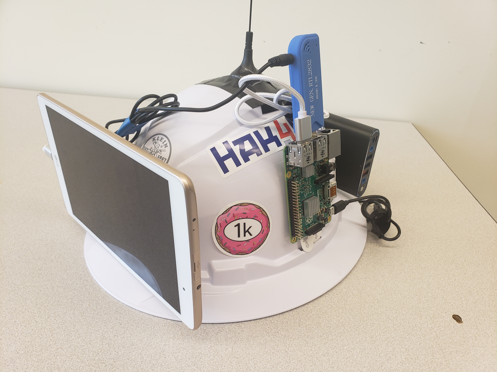

While attending my first DEF CON this year (2021), I discovered the world of the Hard Hat Brigade, a group of people who trick out hard hats to do a variety of things, such as wardriving, allowing to use it as a remote control car, and to look cool too. Owning a hard hat of my own that has not seen too much action other then protecting my head when pruning pear trees with fruit on them, I thought I would give a crack at making my own with a amateur radio twist!
My affinity for Slow Scan Television, more commonly referred to its initialism SSTV, was just the catalyst I needed to start making the SSTV Hard Hat! I would be able to walk around conventions/ham radio events wearing the hard hat while it listens into a predetermined frequency for people transmitting SSTV, and then display it on a the front of the hard hat.
(Hopefully soon) I plan on uploading my recipe here so the home viewer will be able to follow along at home. First I need to get the kinks all worked out, and then write it all up for your pleasure.
For the latest updates, keep an eye on my Twitter profile for the latest news on the SSTV Hard Hat!
Like any good designer, some requirements were layed out right off the bat, such as
Most of these requirements are for safety, whether that be from a physical or digital viewpoint. Walking around with a display on ones head is quite a daring move, which is why there is a requirement to always be able to view what is on the screen while wearing the hard hat, as well as the ability to stop/erase any received transmissions.
Design & production of Mk.0 begun at the start of September 2021 with a goal of completing a functioning version before GrrCON 10, my local infosec con scheduled for Sept. 16-17. I was lucky enough to get a hold of a Raspberry Pi 2b for free from a friend to do the computing necessary. I already had a RTL-SDR that could do the receiving, and some cheap LG tablet I had laying around for the display.
During the design stage, components were fastened to the hard hat using tape to get a general feel of the layout and how it would feel to wear. It was quickly discovered that my height while wearing the hard hat was aprox. 81", which is about 2 inches taller than a standard door clearance, so ducking under door frames is necessary when wearing the device.
From a software point of view, the Raspberry Pi is running Raspberry Pi OS, with rtl-sdr, sox, pulseaudio, qsstv, x11vnc, and ntpdate installed. After some fiddling around, I was able to received SSTV onto the pi, and via VNC view/display the received transmission on the tablet!
For hardware, custom mounting hardware was designed in SolidWorks to work the the existing mounting bracket ontop of the hard hat, intended for use with a headlamp. A total of two mounting brackets were used, one in the front to mount the tablet to, and one on the back to mount the battery pack onto, keeping the entire contraption onto the hard hat. A very liberal amount of 3M VHB tape and command strips (when I ran out of VHB tape) was used to adhere the tablet/battery to the mounting plates.
Come GrrCON, Mk.0 was done, kinda. Due to several snafus, the mounting plate for the tablet failed printing 4 times across 2 printers before getting a functioning mount. Note the use of the word "functioning", as a lot of adhesive was needed to hold everything onto the hard hat, as it was found initially that the smallest movement could lead to diaster in terms of the tablet falling off the hard hat onto the floor.
Once those bugs were worked out, it worked great! people were able to send SSTV photos to the hard hat and it would display onto the tablet. The hard hat was remarkably heavy though with the battery pack being on the hard hat itself. While the hard hat had really good support, at the end of the second day my neck was defiantly feeling it.
Mk.1 of the SSTV hard hat is scheduled for release for DEF CON 30, giving 6 months between the Mk.0 release. Some planned features for Mk.1, as well as future versions include (subject to change):